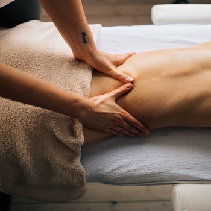
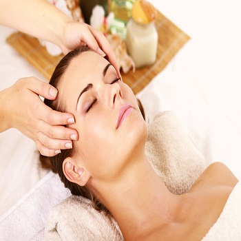
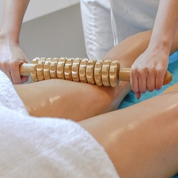
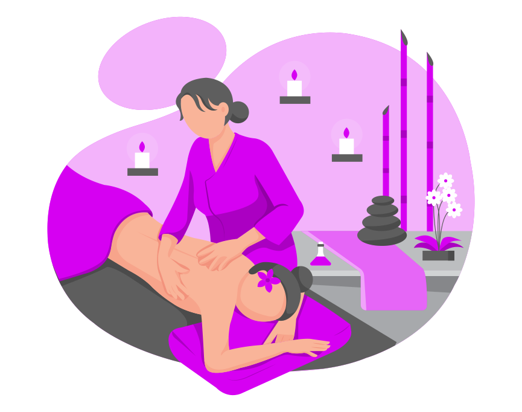

Masajes Descontracturante
El masaje descontracturante es un tipo de masaje enérgico y profundo, que se aplica en la ubicación de las contracturas. Se utiliza frecuentemente en terapia manual cuando el cuerpo manifiesta el estrés, las malas posturas o el sedentarismo mediante la formación de contracturas musculares.
Sacar turno

Masajes y tratamientos Faciales
No solo la espalda necesita un masaje de vez en cuando para aliviar tensiones y estar en plena forma; la estimulación de los músculos y la piel del rostro es muy importante para que presente un aspecto más saludable. Con un masaje facial la apariencia de la piel mejora considerablemente, es una poderosa arma antiedad.
Sacar turno

Maderoterapia
La maderoterapia es uno de los tratamientos del momento porque combina el relax con la eliminación de grasa localizada, celulitis y piel de naranja. Es una técnica que, mediante movimientos y presión sobre ciertos puntos vitales y otros importantes para el objetivo de la terapia, se ayuda de unos instrumentos de madera especiales para buscar una reacción de bienestar y sanación en el paciente.
Sacar turno
Por lo general, los masajes se consideran parte de la medicina integradora. Se ofrecen cada vez más junto al tratamiento estándar para una amplia gama de afecciones y situaciones médicas.
Los beneficios de los masajes pueden incluir, reduccion del estres y aumento de la rejalacion, reduccion del dolor e inflamacion de los musculos, mejora la circulacion, disminucion de la frecuencia cardiaca y la presion arterial y tambien mejora la funcion inmunologica.

Electrodos
La electroestimulacion es una tecnica muy utilizada en estetica, principalmente para combatir la flacidez. Produciendo en la zona, donde va el electrodo, contracciones musculares, logrando asi un efecto de entrenamiento muscular. Sus beneficios son, mejora la circulacion,minimiza la retencion de liquidos, favorece a la oxigenacion de la piel y tonifica musculos. Se puede usar en abdomen, gluteos, piernas y brazos.
Radiofrecuencia
La radiofrecuencia, produce un efecto tensor regenerando la fibra de colageno y elastina, tambien ayuda a drenar liquidos, porque eleva la temperatura de la dermis y ayuda a disminuir celulitis. Sus beneficios son, aumenta la circulacion sanguinea del tejido graso, favorece el drenaje linfatico natural del cuerpo y estimula la formacion de nuevo colageno y elastina en capas internas.
Sacar turnoCriocavitacion
Cavitación es el proceso que se produce cuando se aplican sobre las zonas con contenido lipídico del cuerpo (nalgas, muslos, abdomen, etcétera) los ultrasonidos de baja frecuencia. Estos inducen a la formación de burbujas de vapor, de pequeño tamaño en el interior de los tejidos. Las burbujas aumentan progresivamente la presión que sufren las células lipídicas en este medio, dando como resultado final una destrucción de la pared de las células adiposas.
Sacar turnoTe brindamos la herramienta para sacar el Indice de masa Corporal de un cuerpo (I.M.C.)
| IMC | Nivel de Peso |
|---|---|
| Por debajo de 18.5 | Bajo peso |
| 18.5 - 24.9 | Normal |
| 25.0 - 29.9 | Sobrepeso |
| 30.0 o mas | Obesidad |